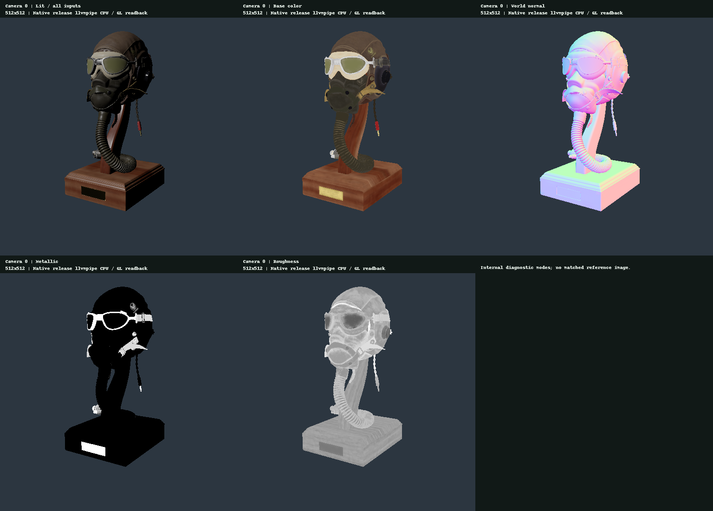
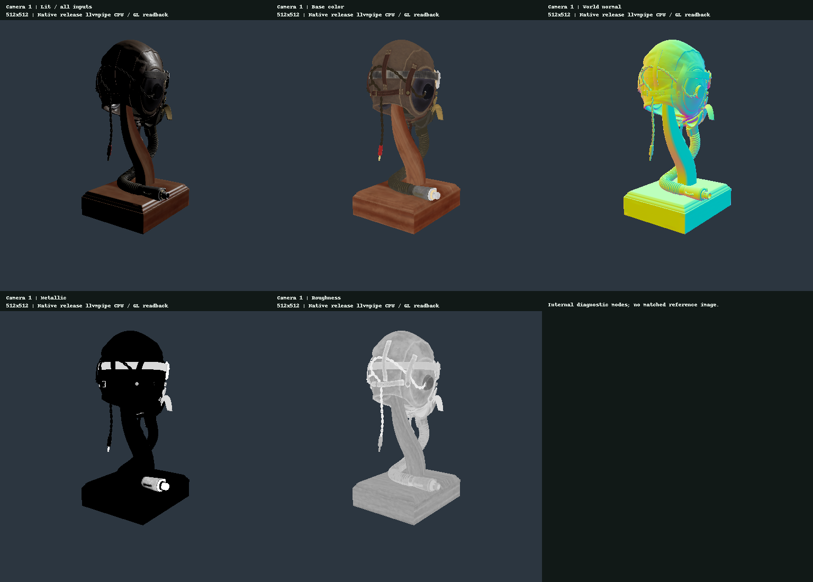
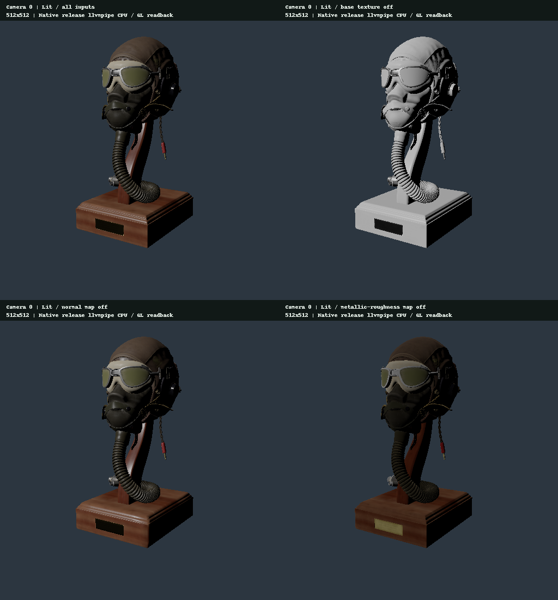
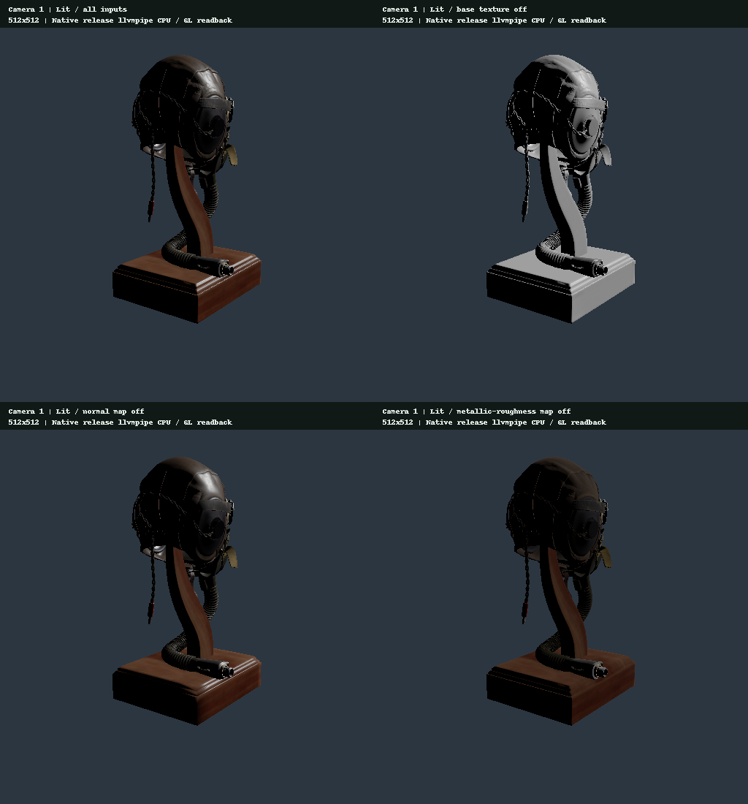

005 · glTF / metallic-roughness PBR 基準描画
結果と未完了条件
FlightHelmet のテクスチャを 512px に加工したモデルを描画しました。opaque metallic-roughness、GGX、height-correlated Smith、Schlick と、接線空間の normal map を使っています。2カメラ×8条件＝16枚の実際の読み戻し画像と、各条件3回×10サンプル、合計480点の native release wall-time を保存しました。各条件で独立して2回読み戻した画像は、A/A 比較で byte 単位まで一致しました。デバッグ表示と各入力を off にした画像は、lit の基準画像から変化しています。
Khronos 公式 viewer との同一条件での参照画像比較は未完了です。クラウドブラウザーでは WebGL 2 が利用できず、参照画像を取得できませんでした。このレポートでは、Issue #6 の参照画像比較要件を完了扱いにしません。内部の A/A 一致、数式テスト、入力の切り替えだけでは、独立したレンダラーとの画質一致を証明しません。
実行環境は Mesa llvmpipe / CPU software rasterizer / GL です。以下の時間は CPU encode・queue submit・blocking queue wait を分けた native wall clock です。GPU timestamp、ハードウェア GPU の性能、Android 実機の性能、Web ブラウザーのフレーム時間を示すものではありません。
実際の読み戻し画像と5つの表示モード
PNG は 512×512 の native PPM を可逆変換したものです。写真や公式の参照画像、ブラウザーのスクリーンショットではありません。パネル内の画像はリサイズしていません。2視点で同じモデル、光、マテリアル、解像度を使っています。
Camera 0

Camera 1

base color はテクスチャと factor を合成した値です。world normal は N×0.5+0.5 とし、metallic と roughness はスカラー値を RGB に複製します。いずれも sRGB attachment で表示するため、PNG の見かけの明るさを linear 値そのものとは解釈しません。デバッグ出力には lit の Reinhard を適用しません。
一つずつ入力を外す
左上は全入力を on にした画像です。残りは base-color texture、normal map、metallic-roughness texture のうち一つだけを off にしています。テクスチャが off でも glTF factor は残し、normal が off の場合はメッシュの法線を使います。カメラ、ジオメトリ、光、露出、トーンマップは固定しています。

- Camera 0, Lit / base texture off: lit との差の MAE は 9.955950 / 255 です。変化した画素は 30,113 / 262,144 pixels、最大 channel 差は 166 です。
- Camera 0, Lit / normal map off: lit との差の MAE は 0.543462 / 255 です。変化した画素は 25,340 / 262,144 pixels、最大 channel 差は 222 です。
- Camera 0, Lit / metallic-roughness map off: lit との差の MAE は 3.118256 / 255 です。変化した画素は 30,006 / 262,144 pixels、最大 channel 差は 216 です。

- Camera 1, Lit / base texture off: lit との差の MAE は 5.862217 / 255 です。変化した画素は 18,454 / 262,144 pixels、最大 channel 差は 149 です。
- Camera 1, Lit / normal map off: lit との差の MAE は 0.511917 / 255 です。変化した画素は 16,194 / 262,144 pixels、最大 channel 差は 153 です。
- Camera 1, Lit / metallic-roughness map off: lit との差の MAE は 1.413670 / 255 です。変化した画素は 18,300 / 262,144 pixels、最大 channel 差は 198 です。
MAE は表示用に読み戻した画像の RGB byte 空間で測っています。知覚上の距離、正解からの誤差、品質向上を表すものではありません。normal を off にした差が比較的小さいことだけを理由に、normal mapping が不要だとは結論しません。
A/A 比較の2枚目は native assertion で検証し、1枚目だけを保存しています。レポート生成器は保存画像と差分メタデータを照らし合わせます。
部位ごとの見方と既知の差
- LensesMat は optional KHR_materials_transmission に未対応です。opaque core metallic-roughness のフォールバックを使います。レンズが不透明になるのは既知の制限であり、透過を含む参照画像と一致するとは主張しません。
- MetalPartsMat の金属反射には単一の directional light だけを使います。IBL・環境反射を含む参照画像に比べ、光が当たらない金属部が暗くなる可能性があります。今回は条件を揃えた画像で、その差を定量化していません。
- LeatherPartsMat / RubberWoodMat / GlassPlasticMat / HoseMat の法線と roughness の細部は、512px 化と mip によって平滑化されます。Hose は RubberWood の画像を共有します。元の高解像度アセットとはテクスチャの条件が異なります。
- 接触部・凹部については、投影される影、IBL、間接光を実装していません。ORM.r の occlusion は直接光に掛けません。暗部は主に N.L によるもので、shadow map の証拠ではありません。
- 全部位で linear 計算を行った後、lit だけに固定の Reinhard と exposure 1 を適用します。参照側の光、環境、露出、トーンマップ、透過を揃えない比較には、複数の交絡要因が残ります。
Native release の時間測定
以下は各条件30点をまとめて求めた通常の中央値と nearest-rank p95 です。3回の繰り返しは同一プロセス内の連続した区間であり、独立実験3回や信頼区間ではありません。各条件の先頭でだけ3フレームのウォームアップを行います。繰り返しごとのウォームアップや、モード順序のランダム化・ローテーションは行っていません。
デバッグモードや入力が off の場合も、textureSample はシェーダー内で無条件に実行されます。そのため、時間の差をテクスチャ帯域の節約量とは解釈しません。
Camera 0 / ms
- Lit / all inputs: encode の中央値/p95 は 0.107/0.384、submit の中央値は 17.170、wait の中央値は 0.834、total の中央値/p95 は 18.139/40.901 です。repeat ごとの total 中央値の範囲は 15.988–22.002 です。
- Base color: encode の中央値/p95 は 0.101/0.130、submit の中央値は 13.091、wait の中央値は 0.748、total の中央値/p95 は 13.976/22.638 です。repeat ごとの total 中央値の範囲は 11.401–14.803 です。
- World normal: encode の中央値/p95 は 0.108/0.129、submit の中央値は 11.443、wait の中央値は 0.591、total の中央値/p95 は 12.140/40.123 です。repeat ごとの total 中央値の範囲は 11.705–25.671 です。
- Metallic: encode の中央値/p95 は 0.099/0.128、submit の中央値は 13.409、wait の中央値は 0.585、total の中央値/p95 は 13.752/21.177 です。repeat ごとの total 中央値の範囲は 13.101–14.059 です。
- Roughness: encode の中央値/p95 は 0.102/0.146、submit の中央値は 15.527、wait の中央値は 0.702、total の中央値/p95 は 16.341/26.334 です。repeat ごとの total 中央値の範囲は 12.649–18.541 です。
- Lit / base texture off: encode の中央値/p95 は 0.114/0.285、submit の中央値は 15.340、wait の中央値は 0.704、total の中央値/p95 は 16.764/31.014 です。repeat ごとの total 中央値の範囲は 14.947–20.237 です。
- Lit / normal map off: encode の中央値/p95 は 0.111/0.124、submit の中央値は 14.837、wait の中央値は 0.755、total の中央値/p95 は 15.833/26.916 です。repeat ごとの total 中央値の範囲は 15.625–15.990 です。
- Lit / metallic-roughness map off: encode の中央値/p95 は 0.102/0.150、submit の中央値は 14.868、wait の中央値は 0.648、total の中央値/p95 は 15.390/24.649 です。repeat ごとの total 中央値の範囲は 14.791–18.100 です。
Camera 1 / ms
- Lit / all inputs: encode の中央値/p95 は 0.096/0.140、submit の中央値は 16.193、wait の中央値は 0.747、total の中央値/p95 は 17.222/25.490 です。repeat ごとの total 中央値の範囲は 16.327–19.114 です。
- Base color: encode の中央値/p95 は 0.086/0.111、submit の中央値は 12.157、wait の中央値は 0.608、total の中央値/p95 は 12.922/21.180 です。repeat ごとの total 中央値の範囲は 11.891–14.471 です。
- World normal: encode の中央値/p95 は 0.091/0.111、submit の中央値は 12.883、wait の中央値は 0.583、total の中央値/p95 は 13.614/21.661 です。repeat ごとの total 中央値の範囲は 12.289–14.073 です。
- Metallic: encode の中央値/p95 は 0.079/0.131、submit の中央値は 12.461、wait の中央値は 0.607、total の中央値/p95 は 13.130/19.489 です。repeat ごとの total 中央値の範囲は 13.009–13.247 です。
- Roughness: encode の中央値/p95 は 0.089/0.112、submit の中央値は 12.464、wait の中央値は 0.573、total の中央値/p95 は 13.148/21.172 です。repeat ごとの total 中央値の範囲は 12.648–13.823 です。
- Lit / base texture off: encode の中央値/p95 は 0.088/0.132、submit の中央値は 12.236、wait の中央値は 0.598、total の中央値/p95 は 12.912/19.431 です。repeat ごとの total 中央値の範囲は 12.368–13.556 です。
- Lit / normal map off: encode の中央値/p95 は 0.091/0.142、submit の中央値は 12.551、wait の中央値は 0.570、total の中央値/p95 は 13.247/20.644 です。repeat ごとの total 中央値の範囲は 11.803–14.627 です。
- Lit / metallic-roughness map off: encode の中央値/p95 は 0.094/0.138、submit の中央値は 14.802、wait の中央値は 0.606、total の中央値/p95 は 15.917/30.365 です。repeat ごとの total 中央値の範囲は 14.092–18.663 です。
llvmpipe では描画そのものも CPU 上で走り、submit や wait にドライバーの実行が含まれる場合があります。encode だけを全 CPU 負荷とは呼びません。encode + submit + wait が total です。読み戻し、アセット準備、パイプライン生成、固定 buffer/target の確保、surface acquire/present は含めません。native では1ペインを直列に submit しており、Web A/B の2ペイン、rAF、非同期 queue、画面表示とは条件が異なります。
固定条件と実装範囲
- Adapter:
AdapterInfo { name: "llvmpipe (LLVM 19.1.7, 256 bits)", vendor: 65541, device: 0, device_type: Cpu, device_pci_bus_id: "", driver: "", driver_info: "4.5 (Core Profile) Mesa 25.0.7-2+deb13u1", backend: Gl, subgroup_min_size: 4, subgroup_max_size: 128, transient_saves_memory: None, limit_bucket: None } - Release profile を使います。表示・内部解像度は 512×512、100%、t=0 で、MSAA は使いません。シーン描画は 6 draws / 1 pass、別の全画面表示は 1draw / 1pass です。Depth32Float と Less を使い、depth write を有効にします。
- Camera0 の eye は [0.7,0.5,1.1]、Camera1 の eye は [-0.8,0.55,-1.1] です。共通の target は [0,0.25,0]、up は [0,1,0] です。aspect1 で垂直 FOV45°、near0.01/far10 を使います。
- 光源へ向かう方向は normalize([-0.5,0.8,1])、linear radiance は [3,3,3]、exposure1 です。背景の linear 値は [0.025,0.037,0.052] です。
- Globals は group0/binding0 の80bytes です。resolution[512,512]、time0、display_aspect1 と、column-major の view_projection を使います。PBR view は group1、material/textures は group2 です。
- GGX distribution、height-correlated Smith visibility、Schlick Fresnel を使います。dielectric F0=0.04、alpha=max(roughness²,0.0016) とし、metallic に応じて diffuse を減らします。
- base-color は sRGB texture としてデコードし、normal/ORM は linear UNORM として扱います。ORM.G=perceptual roughness、ORM.B=metallic です。factor を掛けて clamp します。normal は tangent.w の符号と normalScale を使い、Y は反転しません。
- color の mip は linear-light で計算します。normal の mip は符号付きベクトルを平均してから正規化し、ORM は data-space で平均します。フィルターは trilinear + REPEAT です。lit 出力の sRGB encode は attachment で行い、シェーダー内で gamma 補正を重ねません。
- loader の対応範囲は、この用途向けに用意した GLB の opaque subset に限られます。任意の glTF に完全対応するものではありません。非 identity transform、animation/skin/morph、external URI、未対応の required extension、opaque 以外のマテリアルなどを拒否します。
- 全固定パラメーター・material factor・条件順序
アセットの出典と予算
KhronosGroup/glTF-Sample-Assets / Models/FlightHelmet の commit 4995a638c96dbc94376d3d6164e70fee3ac7f7a2 から加工したモデルです。ジオメトリは変更していません。55,392 vertices / 94,722 triangles、6meshes / 6materials / 15unique images です。ライセンスは CC0-1.0、クレジットは Gary Hsu: Conversion from Maya です。source lock に元ファイルと出典ファイルの SHA256 を保存しました。manifest には、準備した GLB と画像・mip の参照ハッシュを記録しています。
- GLB の転送サイズは 7,428,104 bytes、SHA256 は
e45247aaa51e168e80d65d1fc1d71538500f963ea30e868a5f7cef902e0ecbafです。 - 512→1 の10段階の mip×15枚で、RGBA8 は1枚1,398,100bytes、合計20,971,500bytes です。20MiB＝20,971,520bytes の予算に対して20bytes 残ります。最大4個の1×1 フォールバックを含めると20,971,516bytes です。今回のアセットで実際に確保した対象 texel bytes は20,971,500 でした。
- この値は、テクスチャの texel を格納する論理的な容量です。ドライバーのオーバーヘッド、ジオメトリ、framebuffer/depth、CPU 上のデコード済みコピーを含む総 VRAM/RAM 値ではありません。A/B や同一 semantic で共有する画像を重複アップロードしません。
- manifest の mip hash は、Python float64 で準備した参照値です。Rust runtime は f32 を使い、量子化差は最大2/255 が観測されました。GPU-upload hash や byte 完全一致とは表示しません。
- アセットの manifest のコピー
- 固定した source lock のコピー
再現と検証範囲
RENDERING_LAB_PBR_OUTPUT="$PWD/evidence/pbr-native" cargo test --locked --release -p rendering-core --test pbr_smoke -- --ignored --nocapture
python3 scripts/build-pbr-evidence.py --input evidence/pbr-native
python3 scripts/build-pbr-evidence.py --self-test
python3 scripts/build-pbr-evidence.py --check
python3 scripts/build-reports.py
python3 scripts/build-reports.py --check生成器は release profile、adapter、画像16条件・RGB512×512、差分14条件を検証します。CSV の header、条件順序、サンプル数480、欠落・重複も検査します。時間が有限かつ非負であることと、各区間の時間の合計を確認します。--check は一時領域で再生成し、byte 単位で比較します。--self-test の人工 fixture は検証用の一時ディレクトリだけに作り、実際に測った証拠へ混ぜません。PNG の byte 再現には同一の Pillow/zlib 環境を使います。
native テストでは A/A、known-gray の sRGB 出力経路（期待 byte128/188、誤差≤1）、不正な WGSL に対する pipeline の拒否を検証します。実際の WGSL helper を Rgba16Float target へ描画し、GGX・Smith・Schlick・ORM channel/factor・tangent handedness・normalScale・flat normal・back-face flip の数値 fixture を確認しました。半精度量子化を含む絶対誤差は<0.001 です。
これらは native 経路の検証であり、実ブラウザーでの PBR 操作や Core surface 上の rollback を実行した証拠ではありません。Web の状態遷移は JavaScript mock と core transaction のコード確認で検証しました。実ブラウザーで reload に失敗した後の画面保持と、Android での実行は未検証です。実行対象と元の証拠の hash は working-tree snapshot に記録します。公開済みの base commit だけを、新実装の検証対象とは扱いません。
次に必要な証拠
WebGL 2 対応環境で Khronos 公式 viewer と同じ512px 加工モデルを使い、カメラ、光、環境の off、露出、トーンマップ、未対応の透過の扱いを合わせます。完全には揃わない項目を明記した比較画像で、レンズ・金属・革・rubber/wood・hose の差を説明します。その比較が終わるまで参照画像の要件は未完了です。ハードウェア WebGPU/Android での操作・安定性と GPU timestamp による性能も未検証です。